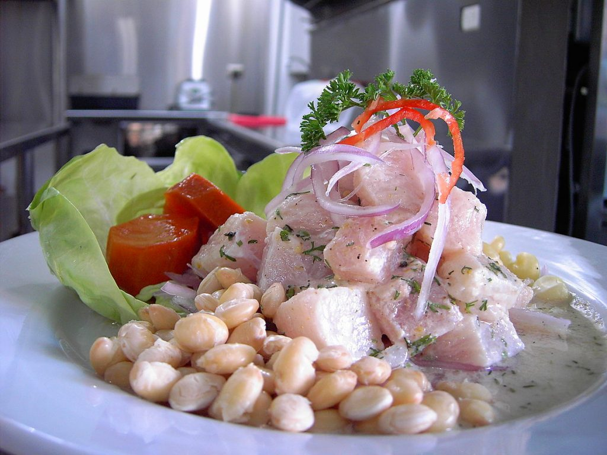
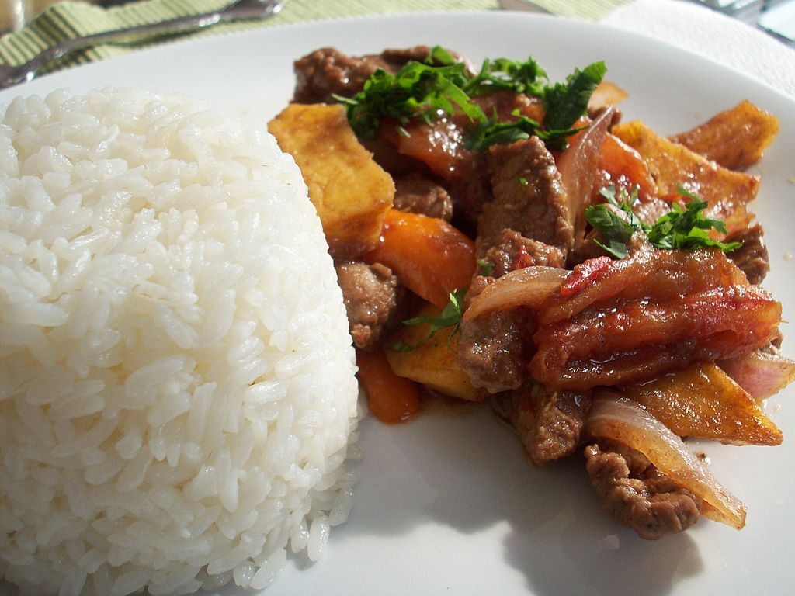
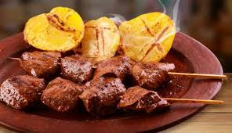

1. Cebiche
Indiscutiblemente el plato estrella del Perú, los visitantes pueden probar este versátil clásico de pescado crudo curado en casi cualquier lugar del país, desde humildes carros callejeros, huariques y hasta elegantes restaurantes.
Aprovechando al máximo una extensa costa de 1500 millas, nuestros cocineros marinan el pescado fresco como corvina, atún y lenguado, junto con conchas negras en jugo de ají limo antes de subir el fuego agregando limón o rocoto. El pescado se baña en esta mezcla picante pero cremosa, llamada leche de tigre, durante unas horas: incluso se dice que cura las resacas.
Finas rodajas de cebolla roja, camote, maíz crujiente (llamado localmente “canchita”) y culantro equilibran la acidez en este plato celestial y fresco.

2. Lomo saltado
Es uno de los platos emblemáticos de la cocina criolla y simboliza como ningún otro la fusión de ingredientes peruanos con las técnicas asiáticas de cocina. Se compone de trozos de carne de res salteados y mezclados con cebolla, tomate, ají amarillo, culantro y sillao. Durante la preparación, la carne a menudo se flambea en la sartén, lo que le da un sabor extra especial. En general se sirve con arroz blanco y acompañado de papas fritas.
El lomo saltado del restaurante Hikari es muy conocido por su gran tamaño y sabor. Puedes encontrar un local en San Miguel, en la Av. La Mar 2339. Por otro lado, si quieres probar un lomo saltado gourmet, El Grifo es una opción irrefutable. Su local original está ubicado en Cercado de Lima, en la Av. Oscar R. Benavides 2703.

3. Anticuchos de corazón
Este delicioso y tradicional platillo es elaborado a base de corazón de res sazonado con ajo, comino, ají panca y vinagre rojo. Suculento, tierno y sabroso, los anticuchos generalmente se sirven acompañados de papas hervidas y maíz, además de salsa de rocoto y de ají con huacatay.
La Tía Grimanesa, que comenzó como un carrito de comida, pero ahora tiene una residencia fija en Miraflores, es un punto de referencia para los anticuchos más exquisitos de Lima. La puedes encontrar en el Jr. Ignacio Merino 466, en Miraflores.
